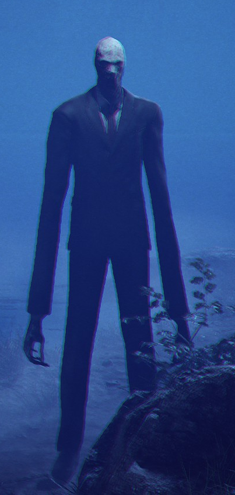
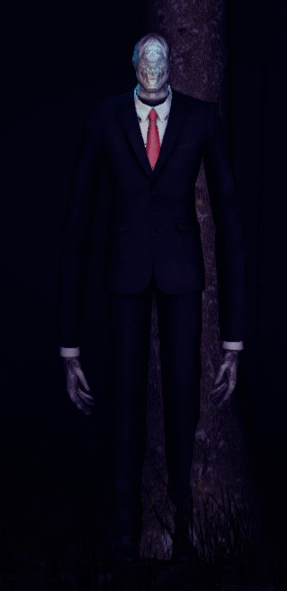
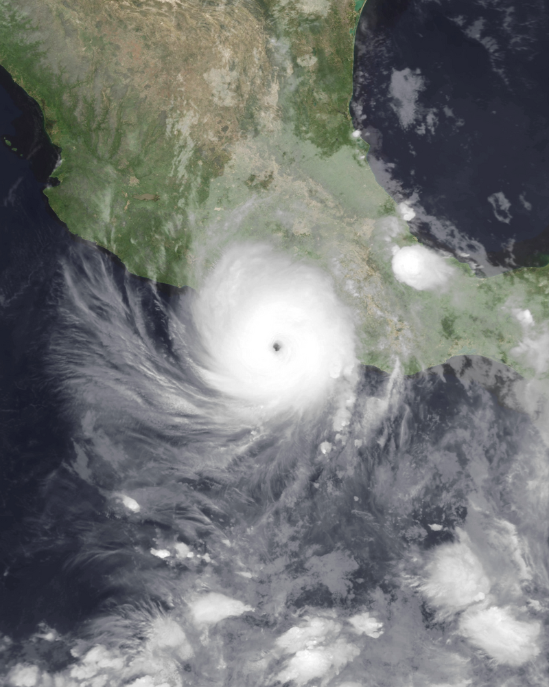
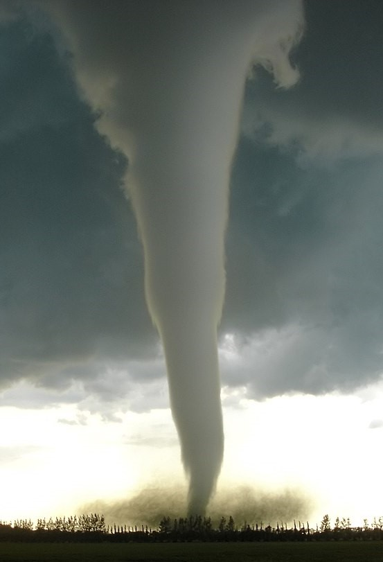
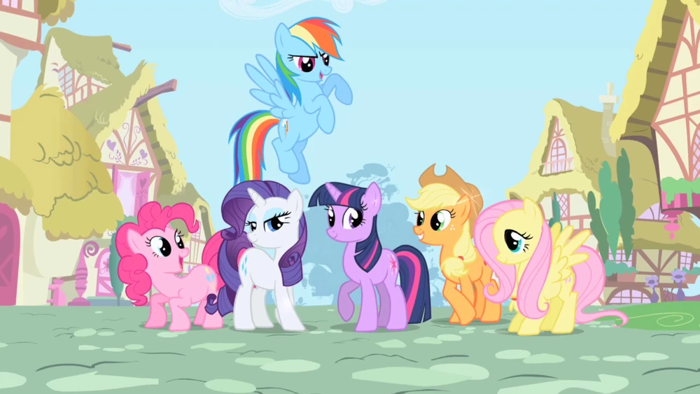

- hyperfixations/interests -
This is a list of my main interests and other, smaller ones that I've had throughout my years on this colorful rock
in no particular order!
- slenderman -


my beloved horror icon, I have loved slenderman since 2012 when The Eight Pages first appeared. I loved watching so many videos of this
silly faceless white man <3
I first remember watching markiplier play the original TEP, and it was so funny. his reactions are just as heartwarming today as they were
before. I used to watch Slenderman's Shadow videos all the time back then, delving deep into those "slender irl sighting" videos.
the good ol' memories of convincing myself that he was out there in the woods behind my house will never die. me and my sister have
shared a love for slender and creepypastas in general for over a decade now, and I wouldn't want it any other way <3333
for games, I have played the original TEP, some Shadow, and a hell of a lot of Slender: The Arrival. S:TA goes wayyy back. I used to
play it on my Xbox 360 alllllll the time, but I never managed to fully beat it. once I heard news of the 10 year anniversary remaster,
I couldn't help myself but buy the game on steam and finally beat it 10 years later on my PC. safe to say, I collected those 8 pages in
my heart.
I love the remaster of S:TA so much. The graphics of the game are insanely beautiful, the gameplay is well optimized, and the game runs
really well on my computer. I can't wait for the lore of the game to expand, and I can get invested in my favorite horror character
yet again. the scares slender gives me are plenty, and I only want more!
Blue Isle are absolute goats in game development, and are some of the most responsive developers I have seen in recent years. Keep it
up you beautiful islanders, you're all doing great! <3
- weather -


weather has been one of my deepest interests since I was, like, 5 years old. there's been something incredibly fascinating about how
storms grow into these powerful monsters then just dissipate into nothing.
I remember when I used to go to the library in my elementary school and just read weather books all the time. nowadays, looking back
at those books, their factual accuracy is kind of off-kilter... lmao
in my lifetime, I remember three storms that majorly damaged my state of New Jersey: Hurricane Irene in 2011, Sandy in 2012, and
Isaias in 2020. Sandy was an insane storm, and I don't think imma see a storm like that for atleast a few more decades. we lost
power for over 2 weeks and our neighborhood was quite damaged. the house right in front of ours had practically lost its roof.
I also recall seeing a house with a giant tree trunk dropped into it while driving down the road in my family's car. we had to
resort to resturaunts to eat dinner most of the time, and we used our generator constantly to get some semblance of normalcy.
to me, 2012 is also the "year without a halloween" as the holiday was practically cancelled due to Sandy.
Hurricane Isaias is where my interest for weather started to crawl back to me in a modern fashion, and 2021 was the year
it truly took off. I joined wxtwitter (weather twitter), and got accustomed to the community over the months. I remember the
community having a shitton of drama going on all the time, fights, trolls, and so on. though, to be honest, I sometimes miss it.
I don't exactly wanna go back to 2021, but it's kinda like... eh, occasionally I wanna go back and see how everyone's been doing.
seems like that's impossible now...
my time on wxtwitter levelled off at the end of 2021 and it slowly sank during 2022. I never fully "left" wxtwitter, I'm just
not very active anymore. just kind of a "spectator in the back" sorta deal. that's okay though, as it was great to be able to
really get in touch with one of my earliest, if not the earliest fixation of mine.
in the present day, weather is just a hobby of mine, though with significantly more knowledge than in 2020 and prior. my main
area of interest is tropical cyclones, though severe weather sometimes grabs my attention (if it doesn't bust for the 50000th time).
- my little pony -
click here for my extended history with this fandom.

ah... my little pony. the children's show whose fandom I have a positive and negative relationship with.
I first joined the community during spring break of 2018, and it all started from me watching pony videos on youtube. In fact,
I remember watching cupcakes and smile HD... as a 12 year old. YAAAAAAAAY MENTALLY INSANE WEIRDOS IN A FANDOM FULL OF LITTLE CHILDREN!!!
moving on, after being fascinated by these pastel-colored horses, I decided to search further. on steam, I joined mlp-related groups
and found some of the first bronies I talked to online. one of these groups also had a discord server; which was the beginning of when everything
began to gradually go wrong for me.
at first, this server seemed fine. I got acquainted with everypony, and I was generally liked. heres a GIGANTIC issue though: I was 12...
and there were freely open nsfw channels. I have no idea if anypony ever knew my age, and it was incredibly stupid of me to never say that I
was highly underage. however, nsfw channels should never be opened freely to a server with minors. in short, this is where the issue of
CREEPY WEIRDOS ONLINE BEING HORRIBLY SEXUAL WITH ME comes along :D
because I don't want this to go on for too long, I'll be cutting details and elaborating on them in the page linked above. during
my time in that server, I made some friends, and I was eventually banned because I broke *drumroll* ONE RULE. I don't even remember
what it was. a lot of other members got the same treatment, and eventually most of the members moved to a new server. this server is
where most of my history with this fandom would go down.
most of the friends I had made during this time were way older than me. even worse? I was horny with them. thankfully, this never
amounted to irl stuff being sent, but it was quite a lot of erping and nsfw art sending. it was horrible. my parents caught me several
times, and I always felt horrible about it. I felt like I hated my parents, but deep down, I began realizing that maybe this fandom
was better left alone.
2019. family issues abound. depression. financial struggles. the worst year of my life. on top of all this, it's also the year
I began contemplating leaving the fandom. after a fuck up with someone who was friends with me and another one sometime in september,
and getting caught again, I couldn't take it. by december, I simply gave up and fully left the fandom in january of 2020.
throughout 2020, 2021, and 2022, I hated bronies. I fucking despised them and thought they were disgusting. my ideology would
soon take a fat reversal, though, following a harrowing break up with my third ex in november 2022. I would take a deep reflection
on how I had been for the past almost 3 years, and begin to open my mind up once more. I eventually rejoined the brony fandom in
march 2023, now grown, mature, and much different compared to 2018.
- - - - - - - - - - - - - - - - - - - - - - - - - - - - - - - - - - - - - - - - - - - - - - - - - -
ANYWAY, as for the show itself, I love it. everything about it is great, and it's a nice place for me to find comfort and
entertainment. i've never been too big on pony music, but some of the songs genuinely go so hard; examples being babs seed and
the spectacle. my favorite pony is rainbow dash for sure,,, she's so kdlsagl;adksghdlghesghadfkadg
- five nights at freddys -
har har harhar har har harhar harhar. har har harhar. har har harhar.
connection terminated.
im sorry to interrupt you, reader, if you still even remember that name.
fnaf holds a special place in my heart. like with slender, I have been an OG follower of it since markiplier started playing it in 2014.
I have seen this series grow and grow over the many years since fnaf 1, and it's been a rollercoaster. while i've never mustered the courage
to beat all the fnaf games, I still love them.
my favorite games are probably fnaf 3 (because im a pussy and its the least scariest), but in terms of actual horror and atmosphere it's
either fnaf 4 or 6. with fnaf 4, having to be a child whos fending off nightmares that aren't even real is extremely well done. the gameplay
is... another story for me, but the type of horror fnaf 4 brings to the table is highly unique. fnaf 6 is great too - being someone who works
in a fake pizzeria in order to lure and trap the last animatronics so their souls can be freed is beautiful.
when it comes to the storytelling, I'd say fnaf 3 or 6 are masters at it. fnaf 3's minigames and endings are well done and the good
ending music brings tears to my eyes. in a way, I feel fnaf should have ended with 3 as scott orginially intended. everything went to
shit with 4, SL tried to fix it, and 6 managed to do what SL sorta failed to do. I do enjoy SL, but it's pretty confusing in the grand
scheme of things. fnaf 6 on the other hand is just *agh* SO GOOD. the true ending is absolutely amazing. I love the music, henry's voice
acting, the visuals, everything. it's genuinely one of the best endings i've seen in a video game, let alone an indie game series. I find
myself watching it again and again, and I don't mind at all.
now... modern fnaf stuff.
I LIKE SECURITY BREACH IM SORRY
yeah I like security breach. I love roxy. I love freddy. gregory and cassie are silly. I think burntrap is just stupid and funny. what do ya want?
overall, fnaf kinda sits in the same place as slender when it comes to "old horror crazes" of the early to mid 2010s, even though fnaf survived and
slender unfortunately died out.
- silent hill -
god I fuckin love silent hill. I never really grew up around it. up until the transmission thing in october 2022, silent hill always kinda seemed like
that one horror series that was way too creepy to play for me. in 2021, I tried to get into playing SH2 but I unfortunately couldn't because, uh... konami
are a bunch of dumbasses and don't know how to properly port games to pc. I eventually decided to try pirating the games in late 2022 and I finally got to
experience the horrifyingly beautiful silent hill universe.